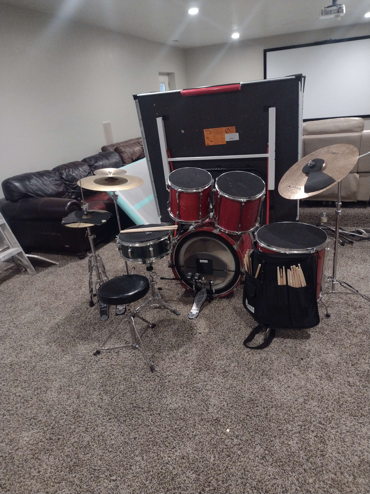
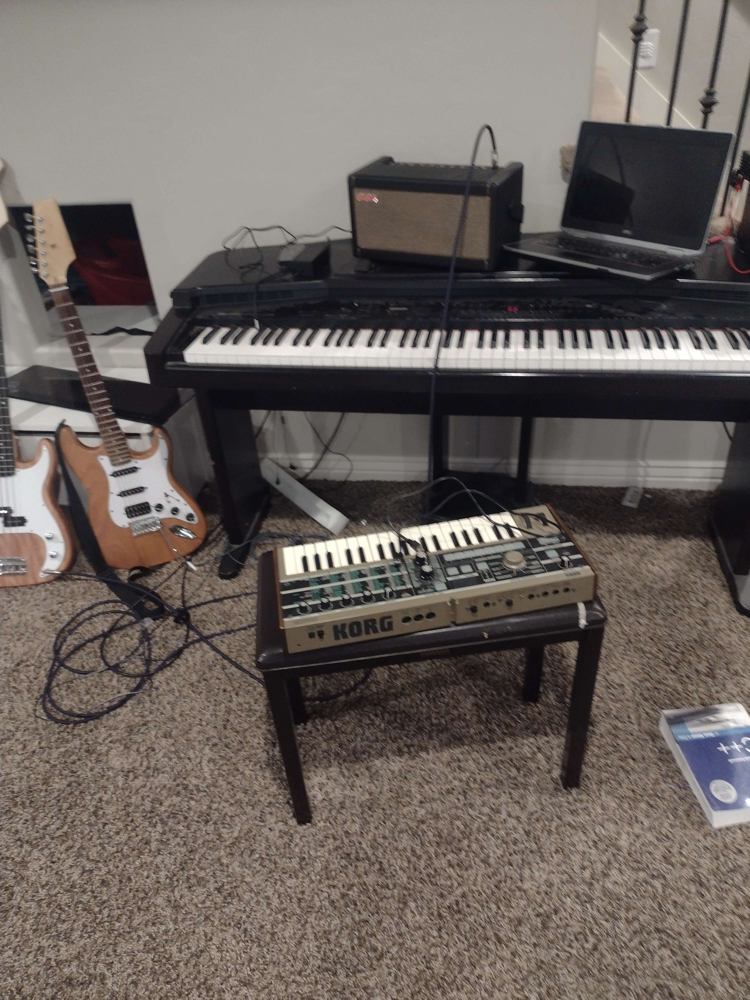
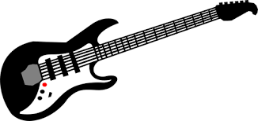
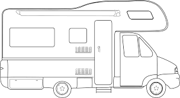
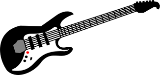
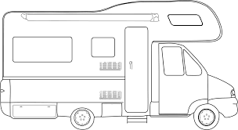

Nathan's Gear
- DRUMS

- Zildjian I Series Ride (20 Inch)
- Tama Hats and Crash
- Wuhan Splash
- 14" Swingstar snare with an Emperor batter head
- 12in, 14in, 16in toms with Evans Genera G2 heads
- 20in kick with Evans Emad2 batter head
- Various cymbal stands
- PDP Double Kick Pedal
- Stringed Instruments

- Knockoff Kit Super Strat (HSS) with aftermarket pickups
- Knockoff P-Bass (Stock pickups)
- Keyboards

- Korg Microkorg
- Yamaha CVP35
- Cables, effects, amps, and strings
- Ernie Ball Strings and cables, effects provided by Spark and the Spark 40 Amp, and FIVE BILLION CABLES
Hex/Blue's Gear
- Mics
- Blue Spark SL
- iPhone X Mic
- Instruments
- Harmoniica UK-201EQ (Nylon Strings)
- Custom Eelctric-acoustic Ukulele with Steel Strings*
- A guitar that cannot be named (Not copyright, we literally do NOT know the name of it!)
- Young-Chang Upright Piano with a funky issue on the sustain pedal
- Williams Electric Piano*
- Artiphon Instrument One*
- Freedrum FD1 v1*
- Amps and Effects
- Fender Acustasonic Tm-15 Amp
- Boss Me-33 Effects Pedal
- Akai LPD8 Drumpad*
- Software
- AUdacity
- Garageband*
- Auxy
- * Indicates an instrument not currently in use due to GarageBand issues.
 Bios
|
Gear
|
Tour
|
Lyrics
Bios
|
Gear
|
Tour
|
Lyrics